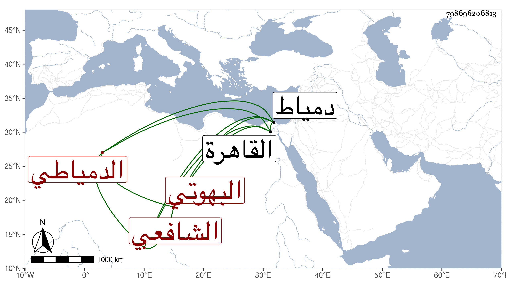

0902Sakhawi.DawLamic.ITO20230111-ara1.EIS1600.798696206813
Biography ID: 798696206813
81
محمد بن عبد السلام بن موسى بن عبد الله ولي الدين أبو زرعة البهوتي الأصل الدمياطي الشافعي أخو عبد الله وعلى الماضيين وأبوهما وعمهما عبد الرحمن . ولد بدمياط في سنة سبع وستين وثمانمائة تقريبا ونشأ بها فحفظ القرآن والبهجة ومختصر أبي شجاع وجانبا من الألفية وغير ذلك ، ولازم الشهاب البيجوري في الفقه والعربية والأصول وتميز وأجاد وقدم القاهرة فقرأ علي يسيرا وكذا على الديمي ، وناب في القضاء عن الولوي البارنباري والأشموني مدة ولايتهما ثم اقتصر على العقود لعدم قاض بها مع عقل وتؤدة ، وقد حج في سنة ثمان وتسعين واجتمع بي ثم رجع .
